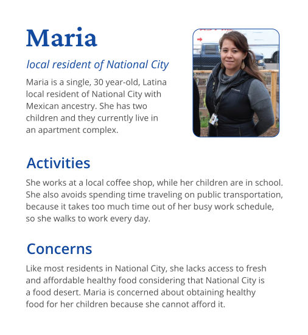
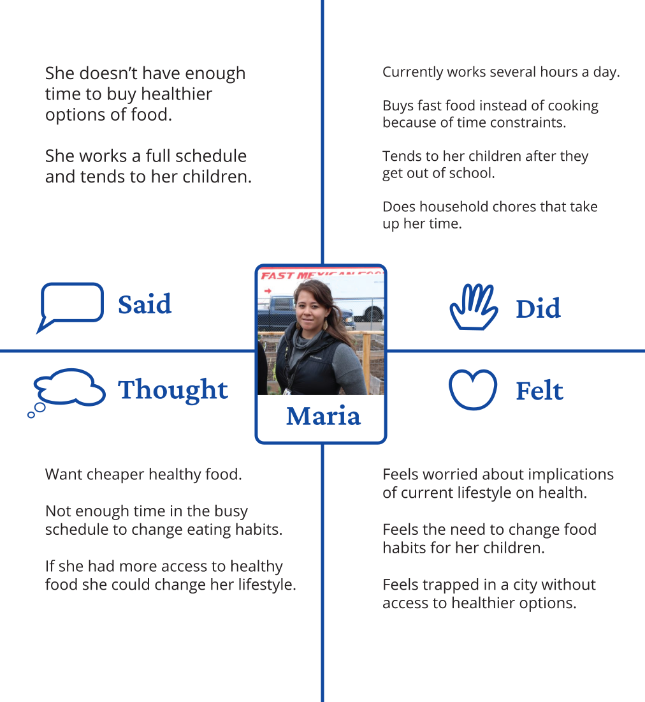
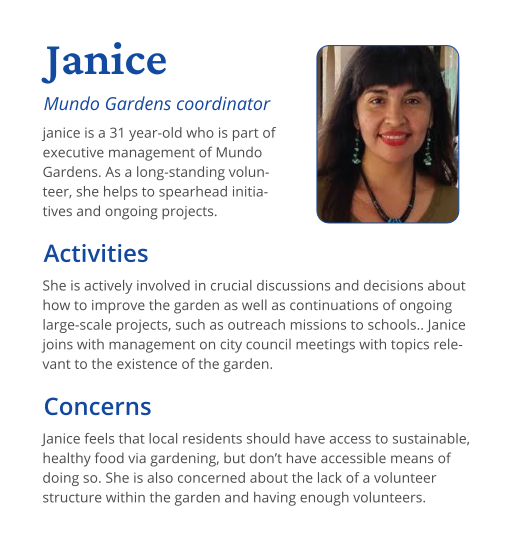
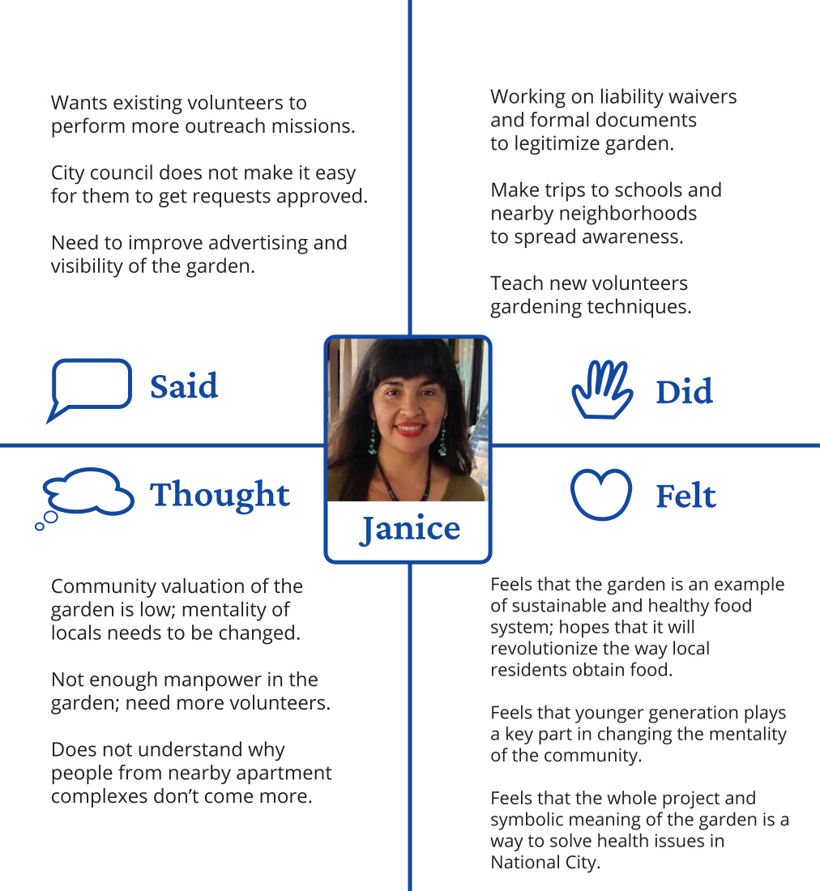
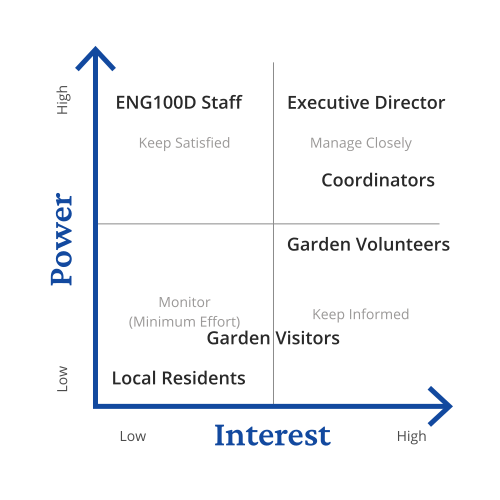

A community garden based in National City, with signs and an irrigation system to encourage visibility and more efficient crop management, enabling volunteers to quickly train themselves in agriculture and focus their energy on other efforts.
Overview
Project Type
This was both a client and student class project. My group and I worked with a non-profit community garden and the program was structured around a college course called Design for Development.
Objective
To assist the community garden's executive director, coordinators, and volunteers with their volunteering management.
Duration
7 weeks
My Role
I helped with user research, ideation, rapid prototyping, user testing, execution of high-fidelity solution(s), project management of the group, and documentation of solution implementation.
Two solutions were made from this project, but I focused on only one of the solutions.
Core Team
Tejas Gopal, Alan Thomas, Michael Harasti, Jesus Osuna, Lawrence Ngo
Mentors
Brandon Reyante - He was a former professor within the Global Ties program who instructed the course that this project revolved around, Design for Development. He taught the class, including our group, the fundamentals of designing effective, sustainable solutions that are informed by ethnographic needs. He also gave essential critique to our assignment deliverables that informed us of the progress of our project.
Affiliations
UC San Diego Global TIES
Design Challenge
Background of Mundo Gardens
Mundo Gardens is a non-profit organization within National City, California, which aims to promote well-being, healthy nutrition, and education amongst the city’s residents. It just recovered from the pollution that city management has done to the land, thanks to civic efforts from its founders to fund Mundo Gardens, but it still sought to continue to grow as an organization.
Project Background
Despite having volunteers to sustain the community garden, the lack of efficiency and structure within the infrastructure of Mundo Gardens as an organization has led to greater difficulties for Mundo Gardens’ volunteers to recruit and retain volunteers as well as bringing greater awareness to the garden’s local community to become involved.
Within the Design for Development course hosted by the Global Ties Program at the University of California - San Diego, our group’s original assignment was to design tools and strategies to improve Mundo Garden’s existing volunteer management. However, after talking to the people within the organization at the time, they were dealing with outreaching efforts,
lack of resources, and many other issues that were beyond the initially prescribed tasks.
Constraints Faced
Lack of physical/digital tools and resources within the garden made it more difficult for us to build any type of solution with the intended affordability, fidelity, and impact that the people within the organization expect.
The knowledge gap between the volunteers and using digital platforms make the Internet of Things less viable as a source for our solutions as these types of solutions wouldn’t be usable or maintainable for Mundo Garden volunteers.
Solution(s)
A series of painted wooden signage that make it easier to identify crops and garner interest for the garden from visitors and future volunteers.
Another solution was a chalkboard that can be used to either help volunteers organize their tasks or enable outreach to prospective people for different parts outside the garden.
Research
Talking to the Volunteers at Mundo Gardens
Once the team has been assembled and ready to start on the project, we decided to take a trip to National City to visit the garden in-person and meet with the local volunteers. We were able to talk to the executive director of the organization, Janice Reynoso, main coordinators who help Janice manage Mundo Gardens volunteer logistics and infrastructure, and the volunteers themselves.
Some of our group members were able to talk to two people at the garden, while other group members also talked with previous students that have worked with Mundo Gardens before. Below is a summary of interview findings from each different type of person that we asked.
Notes from Interviewing the Executive Director
There is a lack of consistent volunteer involvement from some of the members and an opportunity for others to take more leadership and accountability for the work their doing. The organizational hierarchy is lenient and she doesn’t want to burn out volunteers. She has volunteers learn naturally about how to do garden tasks and encourages participation.
Notes from Interviewing the Coordinators
There’s a lack of volunteers in general and there tends to be lack of guidance on what to accomplish. General watering and weeding doesn’t seem to be enough motivation for the volunteers to be involved, as a sense of ownership would better encourage people to stay involved. There should be some way to gain awareness and interest for more people to join Mundo Gardens.
Notes from Interviewing the Volunteers
They visit the garden somewhat regularly to become involved in whatever tasks that the coordinators or the executive director has for them. They have limited communication and commitment with Mundo Gardens and other members of the organization.
Notes from Interviewing Students of Mundo Gardens' Previous Project Team
They have perceived Mundo Gardens as disorganized. There was much difficulty in scoping out the project and to understand the problems that they were able to solve within 10 weeks. They have also found out about Mundo Gardens’ lack of funding, resources, and manpower. They informed the team to show commitment and passion for the project.
Data Synthesis
Personas and Empathy Maps
Three personas and empathy maps each were made to consolidate our understandings of each person’s responses, their way of thinking, activities that they engage in, and thoughts about their life in relation to Mundo Gardens.




Stakeholder Analysis
Once we definitively established the different types of people involved with Mundo Gardens, we mapped out a relationship for
each stakeholder involved along a grid to determine how much influence and interest each stakeholder has in addressing the
topic of volunteer management. This would inform how our solution would potentially affect each type of people.

Problem Definition
Based on user research and stakeholder analysis, these were the needs and insights that emerged to help define the problem space related to Mundo Garden's volunteer management.
Table of summarized needs and insights for three aspects of the problem space: garden management, community profile and involvement, and visibility and outreach.
Topic
Needs
Insights
Garden Management
The current volunteer group needs a unified leadership system.
Management needs ways to improve retention from existing volunteers.
Management needs a way to eliminate manual watering.
There is uncertainty as to what tasks need to be done at certain times by specific volunteers.
Many volunteers don’t stay for the long term, due to time constraints or lack of interest and incentives.
Too much time is wasted on watering when this time could be spent elsewhere. Also, a lot of water is wasted from manual watering.
Community Profile and Involvement
Management needs a way to get more people to assist in the garden.
Management needs a way to shift community mentality to recognize the value of the gardens.
Maintaining the gardens (soil, water, sunlight) is taking more resources (time,people,etc.) to than there are currently.
Currently, locals do not see the benefit or reason for participating in garden activities or helping its cause.
Visibility and Outreach
Management needs help outreaching to the local community.
Management needs a way to make Mundo Gardens physically more visible.
Some locals do not even know of the garden’s existence, including those on the same block.
The current signs and operating hours displayed are small and not easily seen. As a result there is confusion as to the purpose of the gardens.
Problem Statement
Mundo Gardens, a community garden looking to nurture wellness for National City’s youth and families through education and healthy eating,
needs volunteers of all levels of gardening experience to become more empowered and productive so their time could be committed to more
meaningful tasks such as outreach, cultivating plants, and expanding the garden.
Brainstorming
We’ve come up with several different ideas, and established pros and cons with each of them to compare and contrast while having a group
discussion to evaluate each of them. Amongst the numerous ideas, the website, signage, and drip irrigation ideas were ideas that seemed
promising for everyone in our group to implement.
Volunteer Hub
This is a software based solution to help alleviate volunteer management issues by automating registration for events and tracking
volunteer attendance. Those who moderate events created are able to send messages/invites to existing volunteers. Current volunteers
can also be automatically reminded to update their information.
Pros
Cons
Has been established as a standard method for watering in agriculture.
Reliable automation of water distribution to plants.
Both methods are complex and costly to build.
Requires lots of infrastructure.
Not scalable to smaller land size, such as the size that Mundo Gardens occupies.
Sprinklers and Irrigation Systems for Agriculture
These would be defined as two different ways for Mundo Gardens to innovatively and more efficiently water their crops.
One way is dubbed as “Top of Pipe” irrigation, which is useful in areas with different terrain and with crops that
typically grow taller such as corn. The other way is the “Close to the Ground” irrigation, that reduces susceptibility
of water being carried away by drifting winds and thus improves water usage and efficiency.
Pros
Cons
Allows remote organization of many volunteers.
Automation processes reduce manpower needed to manage current volunteer force.
People using the software can sign up to volunteer time slots as needed.
Frequent usage requires consistent access to devices that support the software.
Has various pricing options and not free.
Girl Scouts Selling Cookies
The ideas that Mundo Gardens can adopt from Girl Scouts cookies is how they help raise revenue and increase visibility.
Additionally, like the girl scouts that actively attempt to sell cookies to their community, Mundo Gardens can leverage
the crops that they produce to generate revenue and provide the community with healthy food options. From generated sales,
this idea can also increase Mundo Gardens’ exposure, give volunteers opportunities for personal development in life skills,
and serves as an avenue for Mundo Gardens to recruit more volunteers.
Pros
Cons
Fundraising revenue from sales.
An opportunity for people to learn how to sell produce or other relevant skills.
Potential for greater awareness and exposure for Mundo Gardens.
Produce must be high quality and appealing.
Incentives such as prizes and earned achievements would be needed to encourage people to undergo selling.
Could lead to delegation of inexperienced individuals/volunteers without proper training to sell.
Various Types of Signage
Informative signs related to Mundo Gardens can be placed within the garden. The form factor for signage can be variable,
depending on their function and application. Sign posts can be placed to inform visitors of the Gardens’ hours, inform
volunteers of different types of crops, and even to help organize logistics for keeping track of volunteer work and projects.
Available resources may stifle quality of signage.
Not sustainable for smaller mediums of communication (flyers, disposable banners).
Must rely on other similar mediums of signs to be effective and integrate with volunteer work flow.
Must be robust to sustain from weather and general wear and tear.
Why the Signage Idea Was Chosen
Creating large visible signs, will inform volunteers and visitors about the garden. Signs can be versatile and reformatted, so this template can be adapted to change relevant
information (such as events that change every week). With the given resources in Mundo Gardens, these signs can be constructed easily from wooden boards and paint. This isn’t
limited to wooden boards, but also to the chalkboard that the volunteers can utilize, saving money on invested alternatives and minimizes labor for setup.
Drip Irrigation System
This would be a type of a slow water flow irrigation system implemented using water tanks, meters, and filters,
copper tubing, PVC pipes, natural materials, and nutriments to keep crops within Mundo Gardens hydrated and healthy.
Water would flow from the tank to the pipes, in which the tubing helps to moderate the flow of water that gets delivered
to the crops and plants through a drip mechanism that limits how much water flows out of the tubing.
Pros
Cons
Automates garden task of watering for greater efficiency.
Can use existing materials in the garden (such as PVC pipes, existing distributors/toolkit).
Reliably keeps plants adequately nourished from heavily moderated water use.
Technicality of the solution may be a struggle for volunteers at Mundo Gardens to harness and maintain the system.
Learning curve of maintenance of the solution can be high for people unfamiliar with how to fix breakdowns.
Needs to be expanded with additional parts if garden expands or if new plants were to be introduced.
If plants are uprooted, irrigation tubes may need to be fixed or system could break.
Why the Drip Irrigation Idea Was Chosen
Throughout our user research process, we recognized that several garden coordinators were spending too much time doing menial gardening tasks rather than leading and advising
volunteers. Therefore, the drip irrigation system addresses the core need of automating watering of the plants within the garden. It accomplishes this by slowly distributing
water through PVC pipes and copper tubing wired through the garden. As is observed in Figure 3.2.4 of the sketch, the source is distributed in parallel and targets the roots
of plants through small perforations in the tubing underground. In addition, pressure regulators, nutriments, and filtering are also applied to the original source, ensuring
top quality of water. Drip irrigation systems use very slow water flow and specific target points in the soil to keep plants nourished, which is extremely sustainable and will
save the garden time and water (“Step by Step Drip Irrigation”).
A Mundo Gardens Website
A centralized digital platform that serves as both a volunteer management tool and a resource for people to get to know Mundo Gardens.
Potential applications of the website could enable Mundo Gardens to manage volunteer announcements and tasks within the website, host
important events for people to know about, and showcase work that Mundo Gardens actively creates.
Pros
Cons
Provides a central, organized place for volunteers and administrators to access all necessary management related information.
Leverages the internet as a tool to increase visibility of outreach efforts to current volunteers and awareness of the garden to interested visitors.
Ability for coordinators and executive director to broadcast announcements or information to all volunteers.
Affords new functionality, features, or tools to be added.
Not all volunteers may have access to the internet or a computer.
Needs to be hosted on a server, which may be costly.
Coordinators and executive director will probably be unable to maintain the website as they lack the necessary skills or may not have time to even update the website.
Why the Website Idea Was Chosen
Perhaps the most important need we identified was help outreach efforts by increasing existing volunteer participation in outreach efforts. This, combined with the need for a
volunteer management system and to improve awareness of the garden, led to the formation of this idea. Additionally, many members of the team have a web development background
which allowed for this idea to be feasible. The website facilitates a system of managing volunteering activity and helps increase participation in outreach efforts. Volunteers
can log into their account to update their calendar of when they check in to the garden, what they did, and what remaining tasks they have to accomplish. The website also serves
as a bulletin board for upcoming outreach opportunities, which will increase visibility of outreach efforts and allow volunteers to register for an event to indicate attendance.
From an administrator (garden facilitator) point of view, logging in will allow them to view all information about every volunteer, which will aid in the coordination and management effort.
Concept Testing
We shared our three chosen ideas when we met up with Janice and her volunteers at Mundo Gardens for another visit.
After having the discussion, the team consolidated their feedback into capture grids for each solution.
Group discussion with Janice and David, one of the volunteers, about the ideas that we came up with.
Signage Feedback Capture Grid
Summary of Feedback
For the signage prototype, they felt content with the idea because of the simple, yet different types of information that
could be put onto them, such as gardening instructions, contact information, announcements, and scheduling for volunteers.
Additionally, with the availability of resources to build the signs, Janice felt happy having the community help make the
signs, which would also fit the rustic, homemade brand the garden is trying to achieve. The flexibility and feasibility of
the signs could result in having a day to perform sign paintings and postings where local artists can create the wooden signs themselves.
What worked?
Signs are versatile.
Signs are easy to make.
Signs are entertaining.
Templates can be implemented to cheaply prototype designs.
What could be improved?
Make them easier to place in the garden.
Make it easy for the public to view them.
Questions
How should the signs actually be posted?
Do we have enough materials to make all of the signs?
What templates should we prioritize making?
What are cases that we should consider that could cause breakdown to signs?
Ideas
Bulletin board could be placed on side of shed.
Volunteers have materials, writing utensils, and cutting equipment available for use.
Working on signs could be scheduled another day.
Drip Irrigation Feedback Capture Grid
Summary of Feedback
Janice and David also sought to have an irrigation system for the garden does need task efficiency,
which would enable volunteers to do other priority tasks like outreaching.
What worked?
Visual Components are appealing, it's feasible, and easy to Understand.
Significantly reduced watering time.
Loved the customizable piping and placement of system.
What could be improved?
More financial details, such as cost of installation and maintenance.
A more comprehensive list of materials needed, hard to visualize.
Questions
How will the existing irrigation kit be incorporated or utilized?
How scalable is the water source?
What supplemental materials are needed?
Ideas
Use existing kit in implementation somehow (we didn’t know they had one).
Replace copper tubing with thinner plastic tubes.
Start small in one plant bed area and expand later to perimeter.
Website Feedback Capture Grid
Summary of Feedback
There was a general disinterest from the website idea because Janice and the other volunteers believed
it was too much to invest in and other functions of the website could be achieved through other means,
such as having Google forms for volunteering and event registration.
What worked?
Concepts of scheduling and a calendar with a check in, check out system.
Posting outreach events on website.
Good platform for announcements and visibility.
What could be improved?
Something not as fully fledged as a website that achieves same concept.
Collect concepts of website into a simple link that they can incorporate into their existing web presence.
Questions
How can it be maintained?
Who would pay for server costs?
What could happen if they lost server access?
Ideas
Making a nice organized document that directly connects to current online resources/links.
Design Considerations
Defining Design Criteria
The feedback capture grids informed us on how we decided on what solution to explore, but to further substantiate our decision,
we attempted to further narrow our solutions by classifying and defining design criteria and considerations that our solution
should consider. The list of criterion below became relevant to the group discussion about how to objectively choose our solution.
Functionality
This would define how well the solutions would assist in the activities, and experiences within the
garden space that allow volunteers to understand and execute garden operations.
Usability
Usability is classified as how well the solution can be used by volunteers and others to fulfill its intended purpose.
Visibility and Awareness
This would define how well the solutions would help the volunteers visually recognize the different parts of the garden space, as well as
how well it could attract potential visitors to the garden.
Efficiency
This criterion defines how the solution enables Mundo Gardens to effectively and productively complete garden tasks and other initiatives in a timely manner
while minimizing instances and efforts made to more menial tasks that can hinder or slow down their progress on initiatives.
Socio-Cultural Sustainability
This criterion is a more long-term aspect of how beneficial the solution can be to Mundo Gardens' social initiatives for outreach and
civic engagement. For example, socio-cultural sustainability within a solution enables Mundo Gardens to establish more innovative ways for
executing outreach events, sustainable changes to public mentality about wellness and nutrition, and lasting relationships with its
stakeholders and the general public.
Garden Sustainability
This refers to how well the solution can help Mundo Gardens maintain itself so that it can continue operating. This factor also has
economic sustainability, as the solution should also help Mundo Gardens sustain usage of existing resources that it has so that volunteers
can keep performing gardening tasks or organizational initiatives, as opposed to having the volunteers resort to other more costly methods.
Ecological Sustainability
As part of Mundo Gardens' approach to promote education and well-being without compromising the environment, this criterion defines
how the solution can continuously reduce the organization's negative footprint on the environment and promote more greener practices
to its initiatives.
Deciding on a Solution with a Pugh Chart
How our group came to a solution was through weighing the solutions against the criteria, represented as a Pugh chart. One of the solutions, the website solution, would have a baseline score of zero across all of its criteria while the other two would be compared against the baseline criteria scores.
The signage and drip irrigation solution was not weighed as the baseline, so each of these solutions' criteria was evaluated through a plus/minus system. Each plus indicates one point (1), each minus indicates one negative point (-1). For each plus, zero, or minus, it would be
multiplied by the corresponding weight assigned for each criterion (e.g. two pluses with a criterion weight of three would be 2 times 3, and that would be the score for the solution's criteria, 6). All the total scores for each criterion would be added up to get the total score
for each solution.
Scroll horizontally to view the scores for each of the solutions.
Criterion
Weight
Website (baseline)
Signage
Drip Irrigation System
Functionality
3
0
0
++
Visibility and Awareness
2
0
+
-
Socio-Cultural Sustainability
1
0
++
+
Usability
3
0
++
+
Efficiency
3
0
0
++
Garden Sustainability
2
0
+
++
Ecological Sustainability
1
0
+
++
+
0
13
22
0
7
6
0
-
0
0
2
Weighted Total
0
13
20
Assignment and Reasoning for Different Weights to Criteria
Within the scope of the project, there was a need from Mundo Gardens for us to implement a short-term solution, and so the criteria were weighed accordingly.
Functionality, usability, and efficiency had weights of 3, the highest weights assigned. Functionality was really important since the solution should be able to fulfill its
intended purpose and also effectively aid Mundo Gardens's tasks and initatives. Usability was also considered important since the solution must allow people within Mundo Gardens to use it
right to allow the solution to function properly. Finally, efficiency in the solution was also crucial since the solution must be able to help Mundo Gardens execute its tasks and initiatives, rather
than further hindering Mundo Gardens' progress.
Visibility and awareness as well as garden sustainability had weights of 2. Visibility and awareness is important to help Mundo Gardens garner attention and interest
for future prospective people who want to become involved with Mundo Gardens' initiatives and education. Manpower within the organization and advertising its efforts were also painpoints discovered from
user research. However, within the scope of the project, it would take much longer for Mundo Gardens to implement our group's solutions and see a long-term, less tangible impact on the growth and exposure
of their organization as they still have to incorporate the solution into their outreach efforts and gardening tasks. Garden sustainability is important as the solution should help keep the organization running,
but also has these aforementioned considerations, as there would need to have continuous tracking of how the solution aids in maintaining Mundo Gardens operations and keeping costs manageable.
Finally, socio-cultural sustainability and ecological sustainability were ranked lowest with a weight of 1. The impact that the solution would have to the environment, the local people
within National City, and the socio-cultural norms surrounding the city can only be realized long after our group ends its involvement with the project. Volunteer management and retention results from the solution
necessitates time that Mundo Gardens volunteers must place to continuously implement and access the solution's effectiveness in addressing these problem spaces.
The Chosen Solution
The drip irrigation and signage ideas had different scores for some of the criteria. While the drip irrigation was most effective in addressing functionality, organizational efficency, garden sustainability, and ecological sustainability of the solution,
the signage idea scored much better in visibility and awareness, socio-cultural sustainability, and usability of the potential solution. It was thus decided through a team consensus that we would incorporate both the signage and drip irrigation ideas
together as a single, hybrid solution.
Prototyping
To achieve the delivery of both parts of our solution, we had to split the team up to have people working on both parts of our solution to ensure timely development, testing, and deployment of our solution.
I was mostly involved with two teammates working on the signage. The three of us had different ideas about what the signage could potentially be. Below were the different types of signage that our group
envisioned, which were cognizant of the different criterion established.
Welcoming Signs
These ideally would be large in size, and they would inform visitors about the garden space that Mundo Gardens occupies as well as what Mundo Gardens is.
Signs with Educational Garden Information
These types of signs could be distributed throughout the outside garden space within Mundo Gardens and could contain insightful information about each crop available throughout the garden.
Individual Crop Signage
This type of signage would be tailored to each individual crop that is available at the garden. Early concepts would also have fun facts about each of the crops, or even just quirky, personified phrases as if the crops were directly communicating to the viewer.
A Chalkboard
Although this enables Mundo Gardens plenty of freedom and adaptability to write whatever content suited best towards achieving the organizations efforts with volunteers, there were initial ideas of what the space on the chalkboard could embody. Early concepts
include having a weekly calendar with gardening tasks assigned each day to a specific volunteer, a sign-in sheet, and even a combination of the previous two ideas.
Making the Signs
Despite the potential in executing the signage, the three of us weren't exactly sure which type of signage to further develop and we weren't sure of what available resources Mundo Gardens had that could feasibly make the signs. So, once the entire group decided to
visit Mundo Gardens again, we decided to explore around the garden for available materials. This ensured that the three of us knew exactly what the garden space had and didn't have, which would limit the potential types of signage to make.
Mundo Gardens was not very well funded and most likely could not invest in financially costly efforts, so the three of us mostly scavenged the garden for available resources.
Most of the resources found were within and behind the garden's small shed. We experimented with cutting tools, branches, a wooden pallet, string, and other materials to
configure and make the signs. There were not any materials or walls that could afford the making and hanging of large, noticable signs, so the prototypes that our team would
be able to develop for the rest of the project would be smaller wooden signs for crops.
Branches, a shear, and a wooden pallet were some of the materials that we scavenged to attempt making the signs.Wooden boards were made from sawing the pallet, and branches with tied string would be used as support stands for an initial prototype of a sign.
Janice, the executive director really liked the chalkboard idea that our group suggested during a previous visit, and so she started painting a white section on the side of the shed, where the chalkboard would occupy,
and would apply black chalkboard paint on it. There would also be a bulletin board placement next to the chalkboard. Janice and the volunteers finished building them quickly within the project timeframe.
Janice painted the section on the side of the shed, where the black chalkboard and accompanying bulletin board would be made.
User Testing
My teammates helped to print out versions of the digital mockups for the potential signs and even make popsicle stick physical prototypes to mimick signs for garden crops. We presented these and the rough wooden boards of the signage to the volunteers and local visitors.
Each of the 9 people who participated the user testing were able to view the different types of signage and self-report their personal ratings (represented as numbers on a 5-point Likert scale) of the signs based on three different aspects.
Both paper and early physical prototypes were shown as participants were able to look at the signs and provide their responses on user testing handout sheets.
Functionality of the Signs - Do the signs effectively educate the viewer about the crops or the garden?
Visual Aesthetics - How appealing or desirable were the appearances and design of the signs?
Simplicity and Clarity - How clear were the signs in communicating their role of the garden to participants? Was the purpose of the signs intuitive enough to understand?
Below is a summary of the average personal ratings from the user testing on a 5-point Likert score as well as feedback for each criterion.
Functionality
Average Likert Score (out of 5) - From 1 being that the signs did not fulfill their purpose in educating the
viewer about the crops or the garden, to a 5 being that the signs absolutely educates the viewer, the average score was a 4.86.
Feedback -
Participants liked a lot of the educational aspects about the signs along with the portrayal of both the images
on the signs and the materials used to make some of the signs. They thought the signs helped the garden become
more self-sustaining with navigable crops around the garden. One concern that was mentioned was being able to
make the signs mobile and interchangeable for longer-term maintainability to switch out the naming of the crops.
Aesthetics
Average Likert Score (out of 5) - From 1 being that the signs were not aesthetically
pleasing at all, and 5 being that the signs were engaging and well-made, the average score was a
4.66.
Feedback -
Participants also lieked the portrayal of both the portrayed images and the materials used to make some of the signs.
Volunteers commented that the colors and content of the signs made them engaging. Finally, participants loved
the idea of customizable content and formatting of material. One volunteer noted the lack pictures of real plants.
Simplicity and Clarity
Average Likert Score (out of 5) - From 1 being that the signs were not aesthetically pleasing at
all, and 5 being that the signs were engaging and well-made, the average score was a 4.66.
Feedback -
Participants seemed to easily understood the signs and their intended purpose. Most of the advice suggested was to
make sure the content was fully flushed out in the final designs of the signs.
Iterations
During the process of making the signs, there was a lot of difficulty trying to utilize the wooden stands made of branches to support the signs.
We also noticed that there were plenty of spots near the ground throughout the garden crops that the wooden signs could easily lean against while
still making the signs visible and easy to view, so the three of us decided to abandon the aspect of utilizing stands to properly place the
signage and instead focused our efforts on finishing up on the signage.
For the remaining time that we had, we decided to focus on being able to deliver one aspect of the signage, which was to facilitate the
classification of the crops to make them more noticeable around the garden. We quickly sketched out different names of the crops along with
simple drawings associated with the crops.
Sketches of the different types of crop signage with associated drawings of crops for each.
Making More Signs
With the advent of more art supplies (such as paint, paintbrushes, and cups of water for cleaning paintbrushes) and a better understanding of the available materials and construction tools
at the garden, we cut up more boards to paint them, dried up the boards, and painted some of the sketches afterwards.
Wooden boards from wooden pallets were painted brown and left to dry. Then, we incorporated the sketches of the garden crop signs into the painting process of the wooden boards.
Making a Welcoming Sign
We attempted to make a special community sign that said “Welcome to Mundo Gardens”. We had to find zip-ties, bearings, and thicker rope to create the sign in addition to painting it.
The welcoming sign would be configured with three pieces of painted wooden boards connected through zip-ties and it would have a string that afforded the sign to be hung.
More construction tools and painting were needed to make the desired welcome sign.
Final Designs
Signage around Mundo Gardens provide simple illustrations for identifying crops and are made of affordable materials, which sustainably enable volunteers to facilitate garden navigation,
improve the garden landscape, and entice future volunteers to curiously engage with the garden better. Potential applications of the signage can expand further to be integrated within
Mundo Gardens community outreach events for painting artists and other people to help paint the signs as well.
The signs can be easily and cheaply made using the garden's existing resources, while using existing affordances from the crops, bricks, stones, or even fences to help support the wooden signs (or hang the welcome sign).
Implementation
In addition to the signage, we helped to create a Signage Instruction Manual document
to enable the volunteers to understand the process behind making the signage so that they are able to more easily replicate and adapt the signage for their persona usage. This was handed off to Janice and the volunteers for future usage in case
the signage may wear down or if they need to make more signs.
Results and Reflection
We gave them the signs to use for their crops and even shared our knowledge of the signs to them so that they could help themselves figure out how to best utilize the signage, either for their own garden crops, for community outreach events, and other initiatives that they might have.
A follow up conversation with Janice ensured that, at the very least, the chalkboard would prove useful for volunteer management and logistics. Mundo Gardens is currently working with other student group in part of the Global TIES program and course to continue future developments and
projects.
I was student lead in this project, but I really witnessed first hand just how much of a leader some of my other team members were through their actions. It was the first experience that I
had working with potential client with real-world problems. I learned firsthand just how much of an impact design can potentially have, and just how important implementation was over good
design of an idea as well as designing with both short-term and long-term goals in mind. Showing leadership within the project really was about listening and working with people, for people,
and that has helped me in future projects to not lose sight of the bigger picture in mind when designing anything.
Improvements
With more time and planning, here is what I would have gone about improving this project differently for next steps.
Reaching Out to More People and Organizations
Ethnographic research techniques, such as contextual inquiry, seem to be applicable to developing sound findings and insights about how Mundo Garden volunteers currently go about outreaching, in-person,
for other organizations and events that they participate in. More importantly, this could help our team truly understand firsthand how they currently approach managing their volunteers each day, raise
awareness and interest for their cause, and other important dimensions of the volunteer management topic. We could even learn from other organizations that Mundo Gardens partnered with to see how they
currently approach volunteer management that is different from Mundo Gardens' approach.
Researching Alternative, Do-It-Yourself Methods for Signage
Because the signage was limited to a chalkboard and wooden boards, there could be room to explore on what push and pull factors local residents of National City have to be interested in Mundo Gardens'
cause, thus rethinking on how to market Mundo Gardens to raise National City residents' attention to its cause other than typical advertising and social media presence.
Understanding the Local Mentality for Education and Nutrition
Social activism and community change for Mundo Gardens' mission to promote well-being and nutritional health for people involved a keen understanding of the culture and attitudes that most residents accept in terms of
food that they resort to, why they resort to the food, how they leverage institutionalized establishments to self-maintain their lifestyles, and their perspectives towards non-profits like Mundo Gardens.
Gaining those insights can further inform Mundo Gardens of just how residents in National City understand their culture and their viewpoint on non-profits.